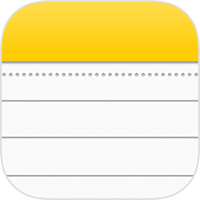
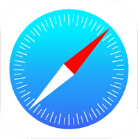
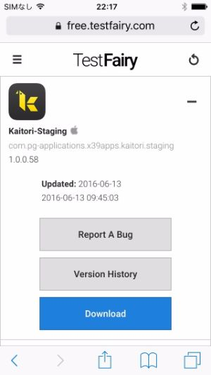
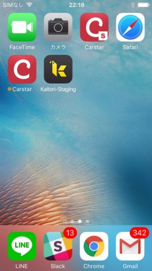

iOSを使っている方は「UDID」の提出をお願いします。
参考リンク: http://mushikago.com/i/?p=1833
参考リンク: http://mattsudev.hatenablog.com/entry/2015/10/05/120815
上記のリンクを参考に端末のUDIDを松山宛てに15日中にお知らせください。
↓16日以降より以下の作業お願いします。
ユーザー名とパスワードを本部長または松山に確認して、Memoに貼り付け。
iphoneより"Safari"ブラウザを起動。
Sarafiでないと動かないので注意。
↑このアイコン
https://free.testfairy.com/loginにアクセス
メモに貼り付けたメールアドレスとパスワードを入力してログイン
Kaitori-Stagingの横にある「＋」マークをタップ
小さなアップルのマークがあるのを確認
Downloadって書いてある青いボタンをタップ
確認画面が出た場合は、「インストール」を選択
ホーム画面より、KAITORIアプリを確認
アプリのテスト開始
不具合に気づいた場合、サイボーズより、松山宛てに内容を教えて下さい。
その時の状況を詳細に、スクリーンショット付きでもらえると非常に助かります。